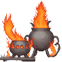
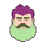

🍲 POT SLOP
a sandbox. drop 1–2 organs in the pot. the bowl shows exactly what you brewed.
DISCOVERED: 0 / 54
☠ INGREDIENTS
🔥 THE POT · 128px

(empty — drop up to 2 things)
🌀 STIR & BREW
DUMP
📖 COOKBOOK
🎩 SLOP CRITIC

KATHUNK HARRIS
"..."
the pot bubbles ominously...